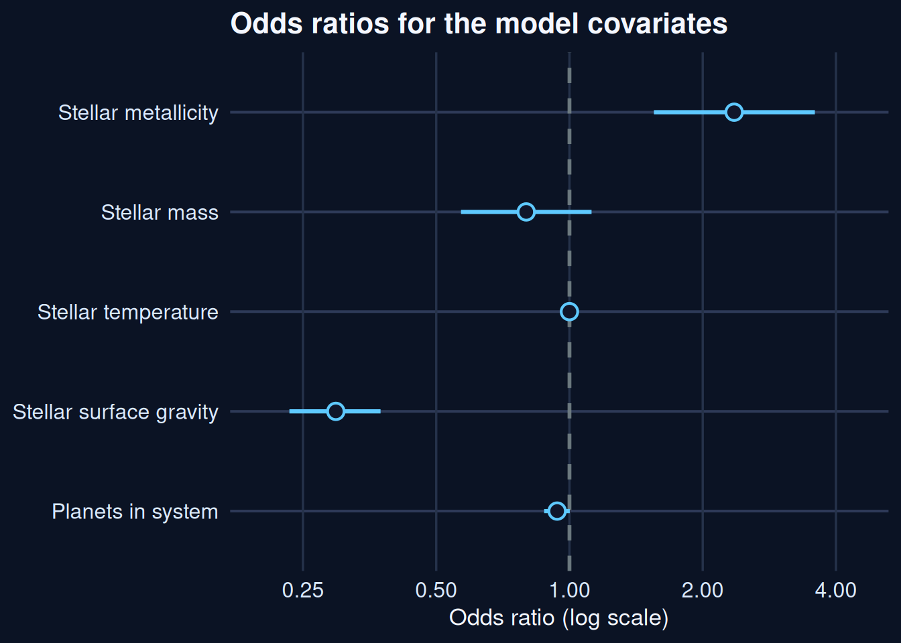
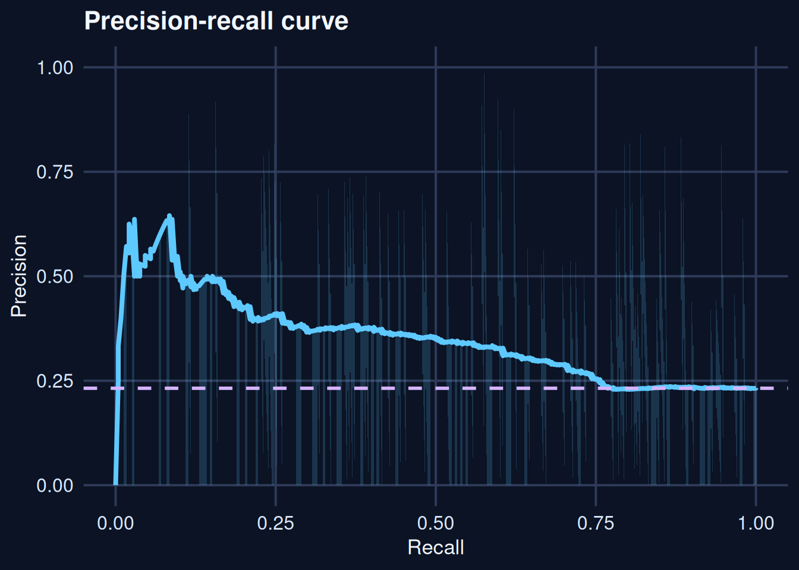
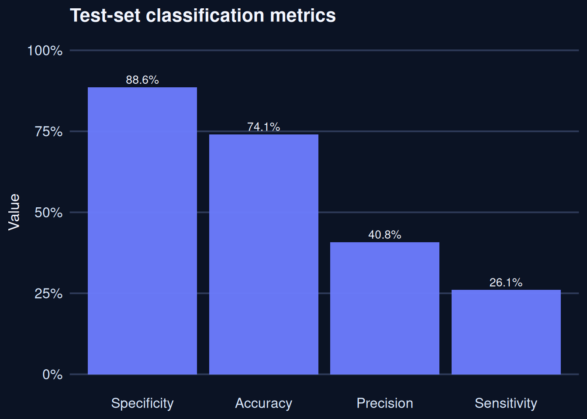
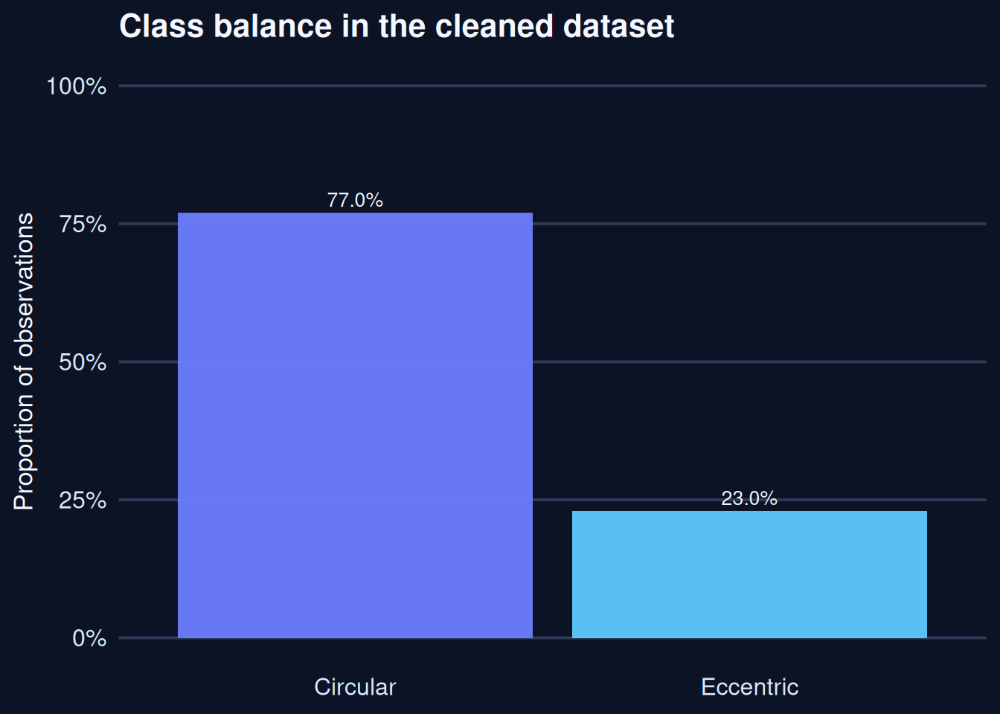
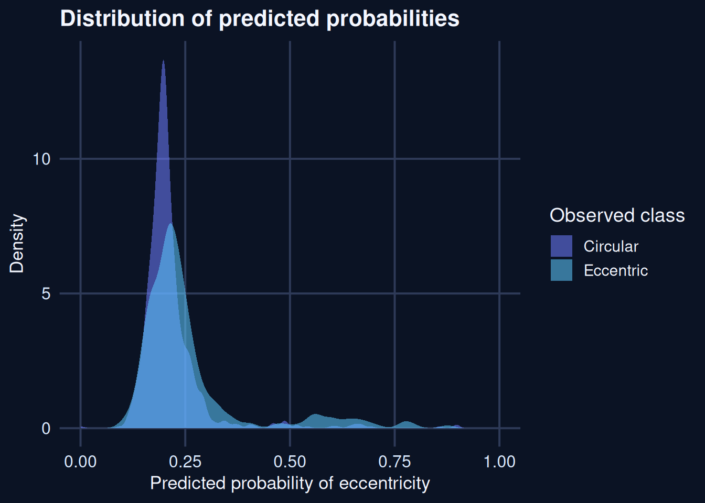
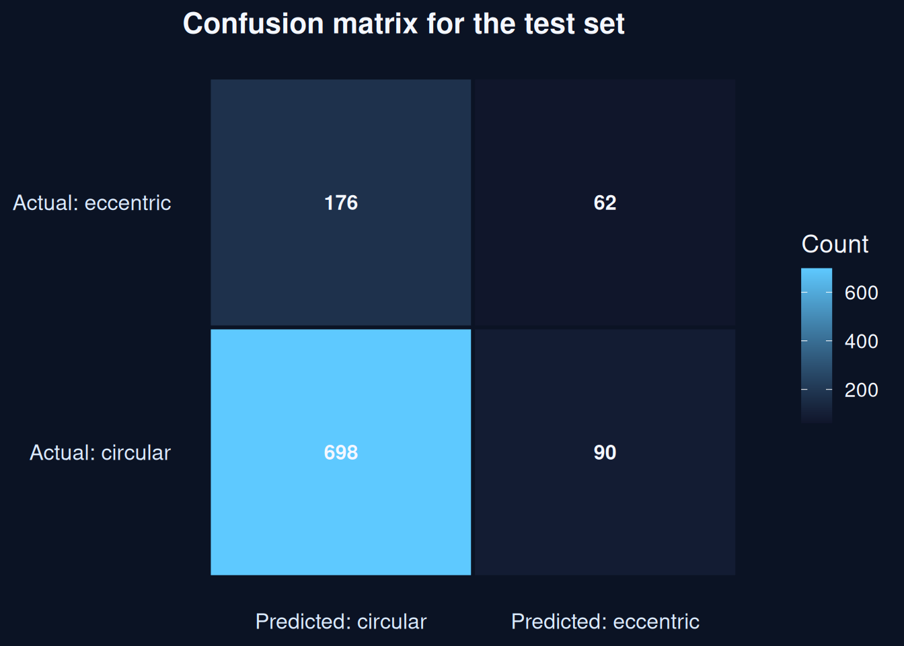

Finding Earth 2.0: Predicting Exoplanet Habitability
Background & Context
Eccentric orbits matter because they can make a planet’s climate less stable over time, which can reduce the long-term prospects for liquid water and a sustained habitable surface environment. In a nearly circular orbit, the planet receives a comparatively steady flux of stellar energy, so seasonal forcing is modest. In an eccentric orbit, the planet moves closer to and farther from its host star over the course of the year, and the incoming flux can vary substantially. In a simple orbital approximation, the time-averaged flux scales roughly as \(F \propto \frac{L_\star}{a^2\sqrt{1-e^2}}\), so even moderate eccentricity can amplify seasonal and climatic variability. For habitability studies, that matters because large swings in temperature and water availability can make long-term surface stability more difficult to maintain.
Study overview
- The goal is to classify exoplanet orbits as eccentric or circular using a small set of stellar and planetary predictors.
- The analysis uses a logistic regression model trained on one subset of the data and evaluated on a separate test set.
- The main question is whether a few broad stellar properties carry enough signal to distinguish the two classes.
- Through this study, I hope to build a reliable model for filtering exoplanets by orbital eccentricity, allowing astronomers to focus on planets with low-eccentricity orbits and thus better candidates for habitability.
Further details on the construction and training of the model can be found under the Methodology tab.
Results
Effect estimates
- Stellar metallicity: odds ratio of 2.40, with a 95% interval from 1.55 to 3.75.
- Stellar surface gravity: odds ratio of 0.31, with a 95% interval from 0.22 to 0.43.
The figure below summarizes the estimated effects of the variables in the model. Values above 1 indicate higher odds of an eccentric orbit, while values below 1 indicate lower odds, holding the other variables fixed. These estimates are the same values reported in the odds-ratio table on the methodology page.
Metallicity and surface gravity were the clearest predictors in this model.
Prediction quality
The next figures focus on how the model separates the two classes and how well it performs on the held-out test set. In this setting, the precision-recall curve is especially informative because it highlights the balance between recovering genuinely eccentric systems and avoiding a large number of false alarms.

This precision-recall curve summarizes the trade-off between precision and recall across a range of thresholds. The curve indicates that the model has limited ability to identify eccentric cases while avoiding false positives.

This bar chart summarizes the main classification metrics on the test set. It highlights the balance between correctly identifying eccentric cases and avoiding false positives.

In the cleaned dataset, circular orbits are substantially more common than eccentric ones, accounting for about 77% of the observations. That imbalance matters because it means the model is being trained on a sample that is skewed toward the circular class.

This density plot compares the predicted probabilities for circular and eccentric cases. A better separation between the two groups would show as two more distinct peaks.

This confusion matrix shows that the model is more successful at identifying circular orbits than eccentric ones, which is consistent with the lower recall seen in the precision-recall curve.
Conclusion
Key takeaways
- Stellar metallicity and surface gravity stand out as the strongest predictors in the model.
- A plausible explanation is that metallicity reflects the chemical enrichment of the protoplanetary disk, which may influence how planets form and how dynamically complex their orbits become.
- Surface gravity may proxy for stellar structure and evolutionary context, which can shape the broader architecture of the system in ways that affect orbital eccentricity.
- The results suggest that basic star-system measurements provide useful information, but they do not fully determine eccentricity.
- This is unsurprising, because orbital eccentricity is also governed by dynamical processes such as planet-planet scattering, secular perturbations, and migration history.
Limitations of the dataset and study
- The analysis relies on a relatively small and observationally derived dataset, so the conclusions should be viewed as suggestive rather than definitive.
- The binary outcome is a simplification of a continuous physical phenomenon; some systems near the threshold may be classified somewhat arbitrarily.
- The model uses only a small set of host-star and system variables, and it does not include other potentially important drivers such as orbital architecture, age, migration history, or planet size.
- Selection effects in exoplanet surveys may bias the sample toward systems that are easier to detect, which can influence the apparent relationships between stellar properties and orbital eccentricity.